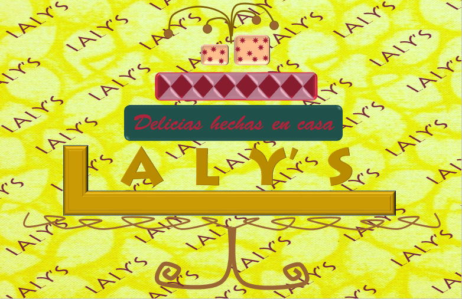

¿Hace cuánto tiempo te dedicas a la pastelería?
Hece 15 años, comencé dando clases y posterior implementé servicio de delivery para mis productos
¿Qué tan frecuente te capacitas en nuevas técnicas y/o en pastelería de otros países?
Solo he tenido una oportunidad de ir fuera del país, la experiencia fue muy buena, aprender cómo se preparan nuevos productos, que han sido preparados por brasileños.
¿Dónde sueles capacitarte?
Suele hacerlo cuando veo algún curso interesando, por ejemplo con Miguel Roque; pero cuando quiero aprender postres nuevos (no típicos de Perú), cuando lo prepara algún amigo extranjero, me doy con la sorpresa que la técnica y/o "el toque especial" es diferente a lo técnico que te puedes aprender de algún curso
¿Sientes que las capacitaciones son tan buenas como si las estuvieras recibiendo en los mismos países donde son originarios los postres?
Son buenas, pero como te comenté, es algo genérico, no tengo eso extra que hace a ese postre, no es el mismo sabor como si lo probaras del lugar de dónde es.
¿Qué crees que te ayudaría a mejorar tus técnicas?
Aprendiendo las técnicas y "secretitos" de las personas que son del país, donde se originó ese postre
¿Qué tanto confías en las técnicas y/o recetas que encuentras en internet?
Si sé que la persona esta capacita, confío; pero es raro encontrar las capacitaciones que ha tenido la persona que ha subido la receta, ha menos que figure una persona "conocida".
